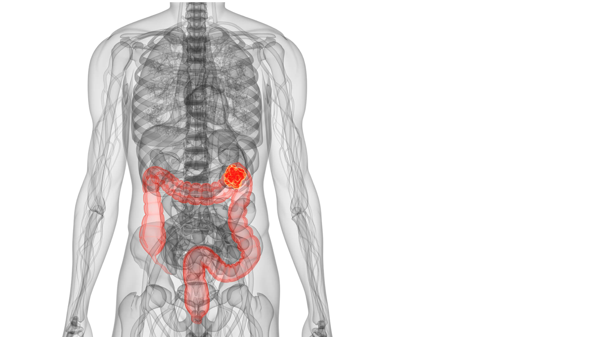
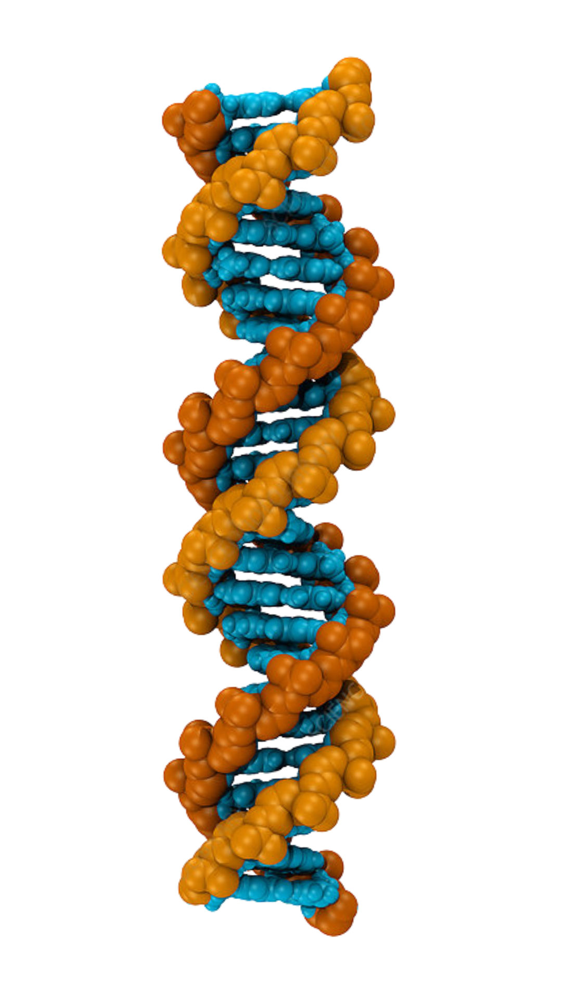
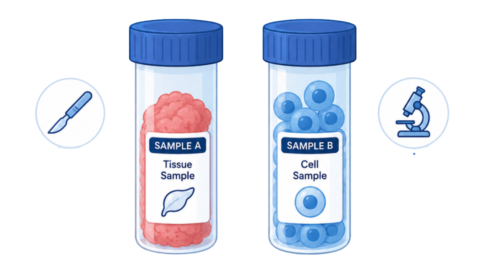

Understanding the biological problem
before analyzing the data.
Why Does This Matter?
Colon cancer is one of the most common
cancers worldwide. It develops when
changes in cells disrupt normal growth
and function.
1.9M+
New cases worldwide each year
900K+
Deaths worldwide each year
#3
Most common cancer worldwide

Common Symptoms
Diarrhea or Constipation
Blood in Stool
Abdominal Pain
Unexplained Weight Loss
Fatigue & Low Iron Levels
About Colon Cancer
Colon cancer develops in the large intestine (colon),
usually from small growths called polyps, and most
commonly affects adults over 50.
Risk Factors
High intake of processed meats
Low intake of fruits and vegetables
Sedentary lifestyle
Obesity
Family history
Many people show no symptoms during
early stages, making detection difficult.
From Mutations to Tumor Development
Colon cancer develops when genetic and epigenetic changes disrupt the systems that normally control cell division, DNA repair, and programmed cell death. These changes can alter gene expression, causing some genes to produce too much mRNA and others too little. The resulting protein changes can allow damaged cells to survive, divide, and form tumors.
DNA mutations or epigenetic changes
→
Altered gene regulation
→
Too much or too little mRNA
→
Altered protein levels
→
Changes in cell growth and survival
→
Tumor development
Gene-expression analysis identifies changes associated with tumor tissue, but it does not by itself prove causation. It helps study tumor biology and identify potential biomarkers or pathways.
What Is Gene Expression?
Almost every cell contains the same DNA,
but different cells activate different
genes to perform specialized functions.
DNA
Genetic instructions

→
mRNA
Copied instructions
→
Protein
Functional molecules
→
Cell Behavior
Growth, repair, and function
What Does It Mean For A Gene To Be
"Turned On" Or "Turned Off"?
Gene Turned On
More active genes produce more mRNA and proteins.
Higher Gene Expression
Gene Turned Off
Less active genes produce fewer mRNA and proteins.
Lower Gene Expression
Cancer can disrupt normal regulation,
causing some genes to become unusually
active while others become inactive.
How Do We Measure Gene Expression?
A DNA microarray measures expression levels for thousands of known genes in one experiment. Labeled material from a sample binds to matching DNA probes, and the resulting signal estimates how much RNA was present.
Collect biological samples
Scientists collect the biological samples they want to compare, such as healthy colon tissue and colon tumor tissue. Each sample represents one condition, so the later analysis can compare gene activity between groups.

By comparing healthy and tumor expression values, researchers can identify genes expressed at higher or lower levels in cancer. These changes can point to possible biomarkers, relevant pathways, and future therapeutic research.